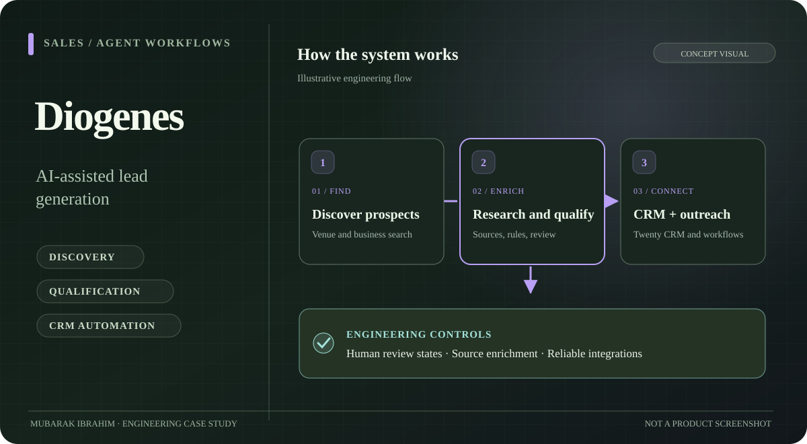

Diogenes the Dog
Prospect discovery through qualification, CRM ingestion and outreach.

Explore the engineering workflow
Geographic and business-source searches identify potential leads for a defined region or sector.
End-to-end implementation · API & CRM integrations
The constraint
Prospect sources vary in completeness and relevance. Automatically sending every discovered record downstream would propagate unsuitable leads.
Decision: Reviewable qualification
A structured validation agent combines business rules and AI-assisted reasoning, producing Pass, Review or Reject and a suitability score.
Tradeoff
A review state preserves uncertain cases for human judgment. A suitability score is a routing aid rather than a verified probability of conversion.
Implementation and controls
Implemented geographic filters, structured qualification, CRM ingestion, Gmail OAuth2 outreach and automated follow-up workflows.
Evidence
The implementation is summarized here without publishing client source code or sensitive operational data. Quantitative results are not stated without measurement context.
Discuss this project
For engineering roles or project enquiries, contact mubastudio@gmail.com.